財產交給誰，和醫療交給誰，是兩把不同的鑰匙
民法 §1113-2 以下 │ 病人自主權利法 │ 安寧緩和醫療條例
謝秉錡律師事務所
謝秉錡律師 劉靜芬律師 何博彥律師 林育正律師 陳儒學習律師
中華民國 115 年 10 月 4 日
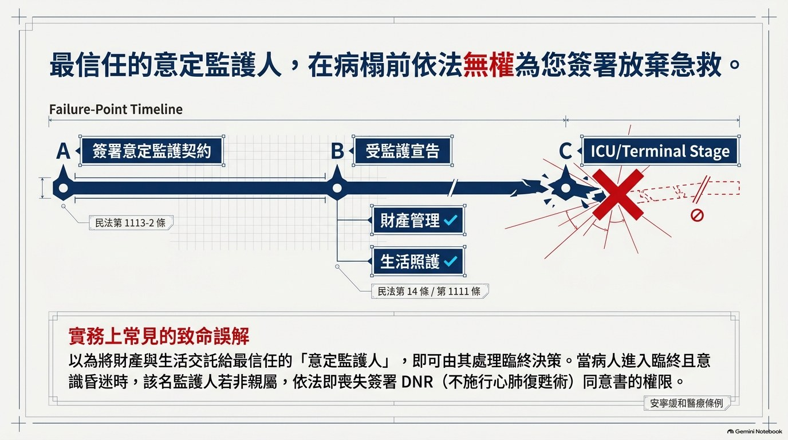
一個真實卻常見的困境
① 當事人為避免日後失能、財產遭覬覦，與「最信任的人」簽立意定監護契約。
② 約定於其受監護宣告時，由該信任之人擔任監護人。
③ 日後當事人進入臨終階段、無法表達意願——
④ 該監護人依法竟無權為其簽署「不施行心肺復甦術（DNR）」同意書。
★ 不是設計疏漏，而是立法者刻意區分三種法律關係所致。
本文要回答的三個問題
１ 意定監護、醫療委任代理、最近親屬，各有何法律依據與權限？
２ 何以意定監護人不當然具有醫療決定權？
３ 如何透過預立醫療決定（AD）事先填補落差？
誤解 ①
「簽了意定監護契約，
監護人就什麼都能決定。」
❌ 錯。
監護權僅及於財產管理與生活照護，不含臨終醫療決定。
誤解 ②
「最近親屬就是
民法扶養義務的順序。」
❌ 錯。
安寧條例 §7Ⅳ
已用立法明文列舉 7 款範圍，
與民法 §1114 無關。
誤解 ③
「家屬簽了放棄急救，
就和病人的預立醫療決定
衝突。」
❌ 錯。
法律明定：家屬代簽
不得與病人
明示之意願相反。
★ 三個誤解的共通根源：把「三種身分」誤認為「一種權力的三種稱呼」。
法制架構
三種身分、三套權限
| 機制 | 法律依據 | 決定主體 | 適用時點 | 權限內容 |
|---|---|---|---|---|
| 意定監護 | 民法 §1113-2～ §1113-10 | 受任人 （監護人） | 受監護宣告後 | 財產管理、 生活照護 |
| 醫療委任代理 | 病主法 §10； 安寧條例 §5 | 醫療委任 代理人 | 意識昏迷或 無法表達時 | 代理表達醫療意願、 簽具同意書 |
| 最近親屬代簽 | 安寧條例 §7Ⅲ | 最近親屬 | 末期病人且 意識昏迷時 | 出具 DNR 同意書 |
★ 核心命題：此三者為分立關係——取得其一，不等於取得其餘。
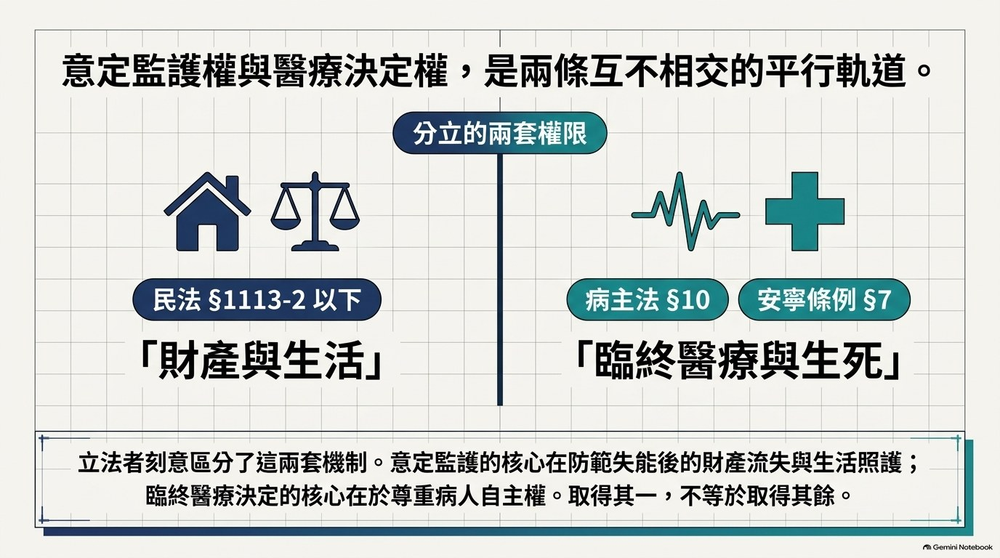
民法 §1113-2（定義）
稱意定監護者，謂本人與受任人約定，於本人受監護宣告時，受任人允為擔任監護人之契約。受任人得為一人或數人。
民法 §1113-3（成立要件）
| 要件 | 內容 |
|---|---|
| ① 公證成立主義 | 應由公證人作成公證書始為成立 |
| ② 通知法院 | 公證人作成公證書後七日內，以書面通知本人住所地之法院 |
| ③ 親自到場 | 公證時，本人及受任人應在場，向公證人表明合意 |
| ④ 生效時點 | 於本人受監護宣告時，發生效力 |
| 條號 | 內容 | 性質 |
|---|---|---|
| 民法 §1092 | 監護人於監護權限內，為受監護人之法定代理人 | 代理權 |
| 民法 §1100 | 監護人應以善良管理人之注意義務執行職務 | 注意義務 |
| 民法 §1102 | 監護人不得受讓受監護人之財產 | 利益衝突迴避 |
| 民法 §1103 | 監護人應會同開具財產清冊之人開具財產清冊 | 財產管理 |
★ 關鍵觀察：上述職務內容均集中於「財產管理」與「生活照護」，法條中未見「臨終醫療決定」之權限。
→ 意定監護權之核心在於財產與生活；其權限來源為民法親屬編，
並不當然及於病人自主權利法或安寧緩和醫療條例所定之醫療決定權。
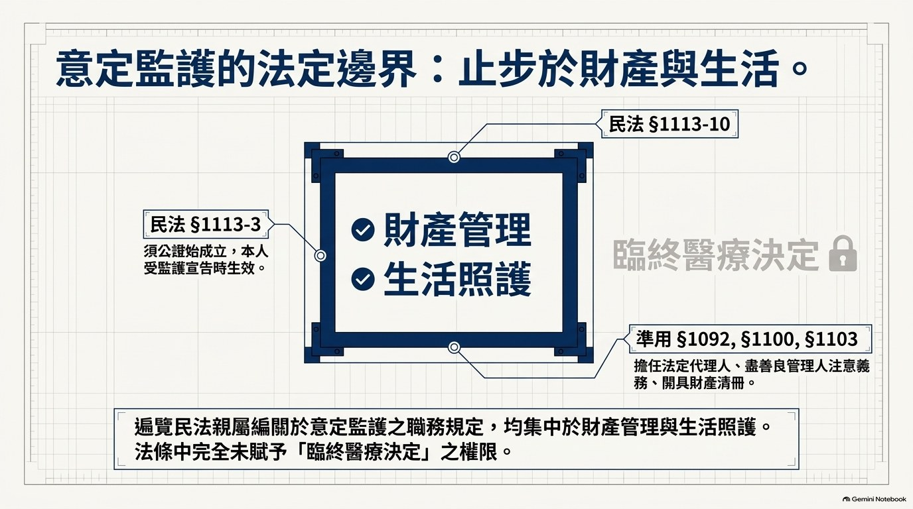
病人自主權利法 §10
意願人指定之醫療委任代理人，應以成年且具行為能力之人為限，並經其書面同意。
下列之人，除意願人之繼承人外，不得為醫療委任代理人：
一、意願人之受遺贈人。 二、意願人遺體或器官指定之受贈人。
三、其他因意願人死亡而獲得利益之人。
權限內容（三項，均限於「醫療意願之表達」）
| ＃ | 權限 | 依據 |
|---|---|---|
| 一 | 聽取病情告知 | 病主法 §5 |
| 二 | 簽具醫療同意書 | 病主法 §6 |
| 三 | 依預立醫療決定內容，代理表達醫療意願 | 病主法 §10 |
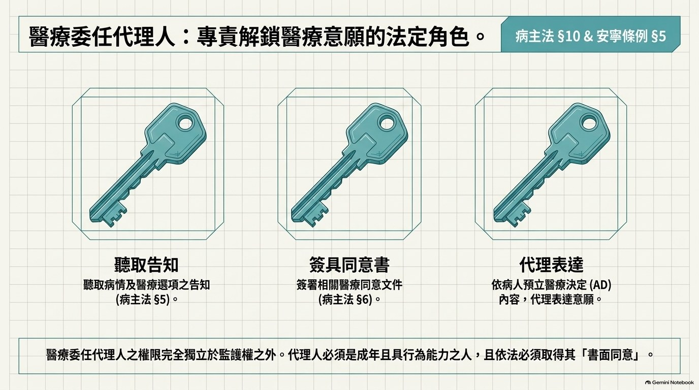
病主法 §10Ⅱ 的立法目的
避免因病人死亡而獲利之人，透過醫療決定權之行使，作成不利於病人之醫療決定。
道德風險之圖像
若無防火牆
受遺贈人 → 掌握醫療決定權
→ 提前放棄急救
→ 早日取得遺產
（道德風險）
立法者之處理
病主法 §10Ⅱ 明文排除：
• 受遺贈人
• 遺體或器官指定受贈人
• 其他因死亡獲利之人
（除意願人之繼承人外）
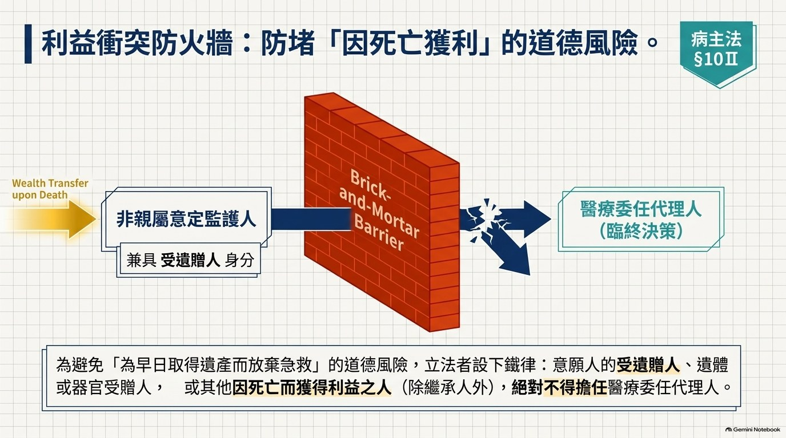
★ 重要澄清：「最近親屬」並非依民法扶養義務順序（民法 §1114）判斷，而是安寧條例 §7Ⅳ以立法明文列舉之 7 款範圍。
| 款次 | 範圍 | 款次 | 範圍 |
|---|---|---|---|
| 一 | 配偶 | 五 | 祖父母 |
| 二 | 成年子女、孫子女 | 六 | 曾祖父母、曾孫子女 或三親等旁系血親 |
| 三 | 父母 | 七 | 一親等直系姻親 |
| 四 | 兄弟姐妹 |
★ 此列舉清單中，不包含「受任之監護人」（除該人恰兼有上述親屬身分外）。
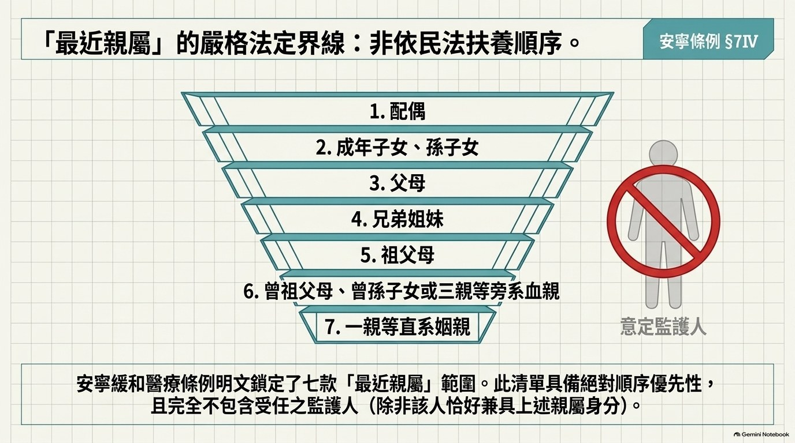
| 項目 | 安寧緩和醫療條例 §7 之規定 |
|---|---|
| 代簽前提 | 末期病人無簽署意願書，且意識昏迷或無法清楚表達意願時 |
| 代簽主體 | 由最近親屬出具同意書代替之 |
| 人數 | 得由一人行之 |
| 順序 | 最近親屬意思表示不一致時，依 §7Ⅳ 各款先後定其順序 |
| 後順序者限制 | 後順序者已出具同意書時，先順序者如有不同意思，應於不施行／終止／撤除前以書面為之 |
| 無最近親屬 | 應經安寧緩和醫療照會後，依末期病人最大利益出具醫囑代替之 |
★ §7Ⅲ後段：同意書或醫囑均不得與末期病人於意識昏迷或無法清楚表達意願前明示之意思表示相反。
→ 病人明示之意願，優先於家屬之代簽。
核心分析
權限落差之形成
| 身分 | 財產／生活 | 臨終醫療決定 | 法律依據 |
|---|---|---|---|
| 意定監護人 | ✅ 有權 | ❌ 無權（除另受指定） | 民法 §1113-2 以下 |
| 醫療委任代理人 | ❌ 無權 | ✅ 有權 | 病主法 §10 |
| 最近親屬 | ❌ 無權 | ✅ 有權（末期病人） | 安寧條例 §7Ⅲ |
★ 取得其一，不等於取得其餘——這正是「最信任的人簽不了字」的制度成因。
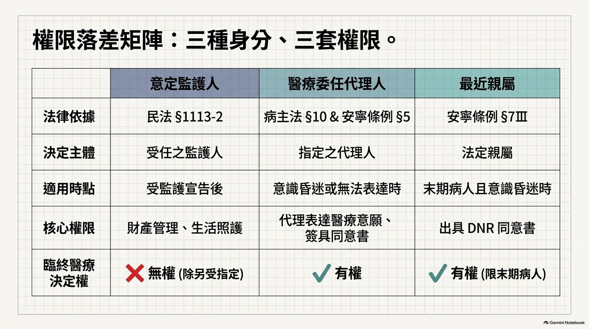
| 意定監護 | 醫療決定 | |
|---|---|---|
| 規範目的 | 財產之保護與生活之照護 | 尊重病人之自主權 |
| 預設場景 | 本人長期失能 | 本人無法表達醫療意願 |
| 主要風險 | 財產流失 | 利益衝突下之不當醫療決定 |
立法者未整合二者之理由
兩種場景之利害關係與風險不同：
• 意定監護重在「防範財產流失」——故設善良管理人義務、禁止受讓財產。
• 醫療決定重在「防範利益衝突下之不當醫療決定」——故設 §10Ⅱ 利益衝突防火牆。
規範目的一旦不同，權限即不可能當然重疊。
當意定監護人恰非病人之最近親屬時
| 時點 | 狀態 |
|---|---|
| ① 本人受監護宣告 | 該信任之人擔任監護人，管理財產與生活 |
| ② 本人進入臨終階段、意識昏迷 | 監護人依法無權簽署 DNR 同意書 |
| ③ 結果 | 最信任之人無法為其做臨終決定 |
★ 此即問題之核心：監護權與醫療決定權，是兩條平行、不相交的軌道。
若該監護人同時為本人之受遺贈人
依病主法 §10Ⅱ 第 1 款，其不得被指定為醫療委任代理人（除其為繼承人外）。
該人在醫療軌道上「全線均不得觸碰」
| 不得為 | 依據 |
|---|---|
| 醫療委任代理人 | 病主法 §10Ⅱ 第 1 款 |
| 預立醫療決定（AD）見證人 | 病主法 §9Ⅳ |
| 主責照護醫療團隊成員 | 病主法 §9Ⅳ |
★ 制度目的均在於「利益衝突之迴避」。
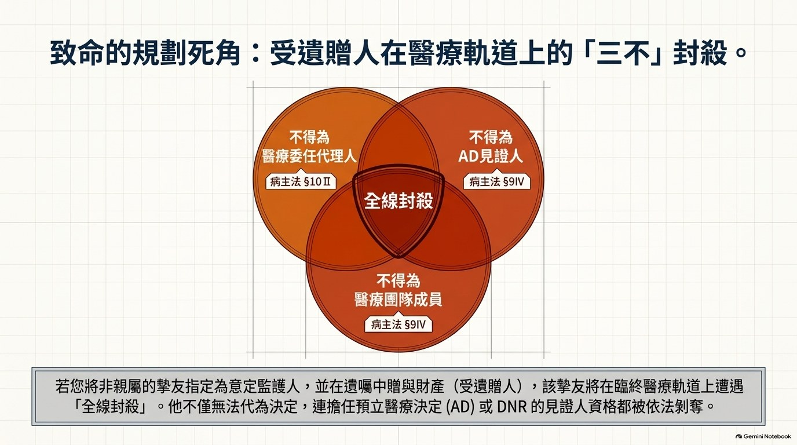
| 機制 | 見證人規定 | 依據 |
|---|---|---|
| 預立醫療決定 （AD） | 意願人之醫療委任代理人、主責照護醫療團隊成員 及 §10Ⅱ 各款之人（受遺贈人等）不得為見證人 | 病主法 §9Ⅳ |
| DNR 意願書 | 應有具完全行為能力者二人以上在場見證； 實施安寧緩和醫療及執行維生醫療抉擇之醫療機構 所屬人員不得為見證人 | 安寧條例 §4Ⅲ |
★ 實務提醒：三種機制之見證人資格限制各不相同。
簽署前應逐一核對——尤其是「受遺贈人」在 AD 見證與醫療委任代理兩處均被排除。
解決方案
三軌並行
程序要件（病主法 §9Ⅰ）
| 要件 | 內容 |
|---|---|
| 一 | 經醫療機構提供預立醫療照護諮商（ACP），並經其於預立醫療決定上核章證明 |
| 二 | 經公證人公證，或有具完全行為能力者二人以上在場見證 |
| 三 | 經註記於全民健康保險憑證 |
參與人員（§9Ⅱ）
意願人、二親等內之親屬至少一人、醫療委任代理人
（二親等內親屬死亡、失蹤或具特殊事由時得不參與）
★ 效力（§14）：符合五款臨床條件之一且有 AD 者，醫療機構或醫師得依其 AD 終止、撤除或不施行維持生命治療或人工營養及流體餵養。
適用對象：僅欲處理「末期病人」情形者（安寧條例 §4、§5）
| 要件 | 內容 |
|---|---|
| 書面 | 意願書須載明姓名、身分證字號、住所、意願內容、日期，並由意願人簽署 |
| 見證 | 2 人以上在場見證（醫療機構所屬人員不得為之） |
| 代理人 | §5 得預立醫療委任代理人，於本人無法表達時代為簽署 |
| 註記 | §6-1 得註記於健保卡，效力與意願書正本相同 |
補充解：最近親屬代簽
於病人未及訂立意願書且已意識昏迷時，依安寧條例 §7Ⅲ 由其最近親屬出具同意書代替之。
限制：該同意書不得與病人昏迷前明示之意思相反（§7Ⅲ後段）。
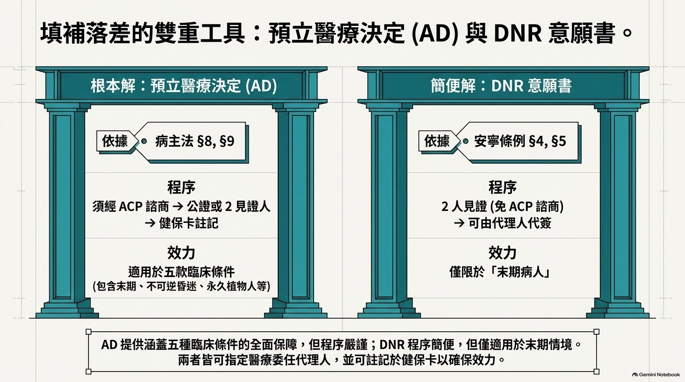
①
病人有意願書／AD → 依病人意願（優先）
↓ 無
②
病人有醫療委任代理人 → 由代理人代為簽署
↓ 無
③
病人有最近親屬 → 由最近親屬出具同意書（§7Ⅲ）
↓ 無
④
皆無 → 經安寧緩和醫療照會，依病人最大利益出具醫囑
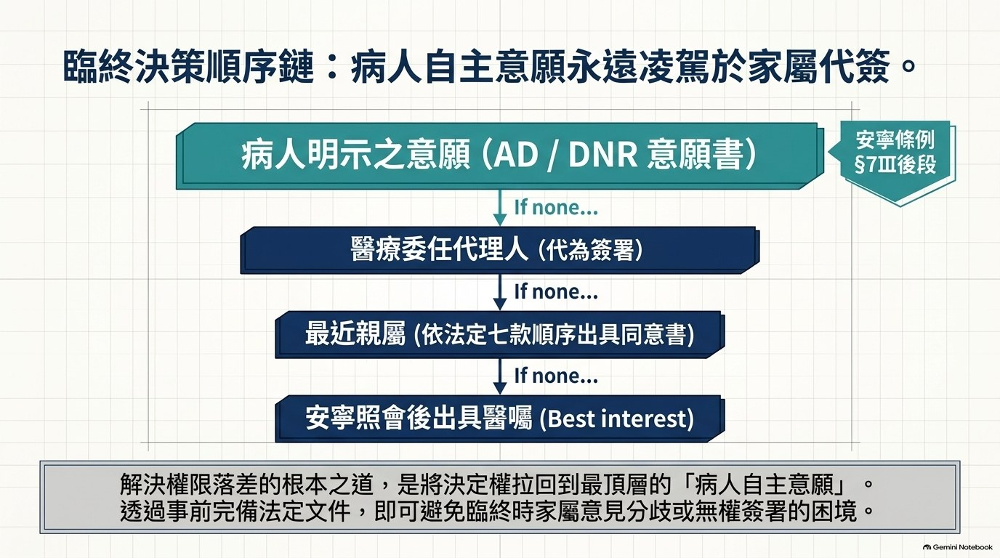
五點結論
① 意定監護權與醫療決定權，於現行法下為分立之兩套權限。
② 意定監護人不當然具有臨終醫療決定權（權限來源為民法親屬編）。
③ 醫療委任代理人為填補落差之關鍵工具，惟受遺贈人等不得擔任。
④ 「最近親屬」為安寧條例 §7Ⅳ 明定之七款範圍，不含單純之監護人身分。
⑤ 病人明示之意願優先於家屬代簽。
規劃建議——三軌並行
| 軌道 | 工具 | 主體安排 |
|---|---|---|
| ① 財產與生活 | 意定監護契約（須公證） | 得指定信任之人（不以親屬為限） |
| ② 臨終醫療 | AD 或 DNR 意願書 | 醫療委任代理人須排除受遺贈人等 |
| ③ 見證安排 | — | 見證人須排除受遺贈人等（§9Ⅳ） |
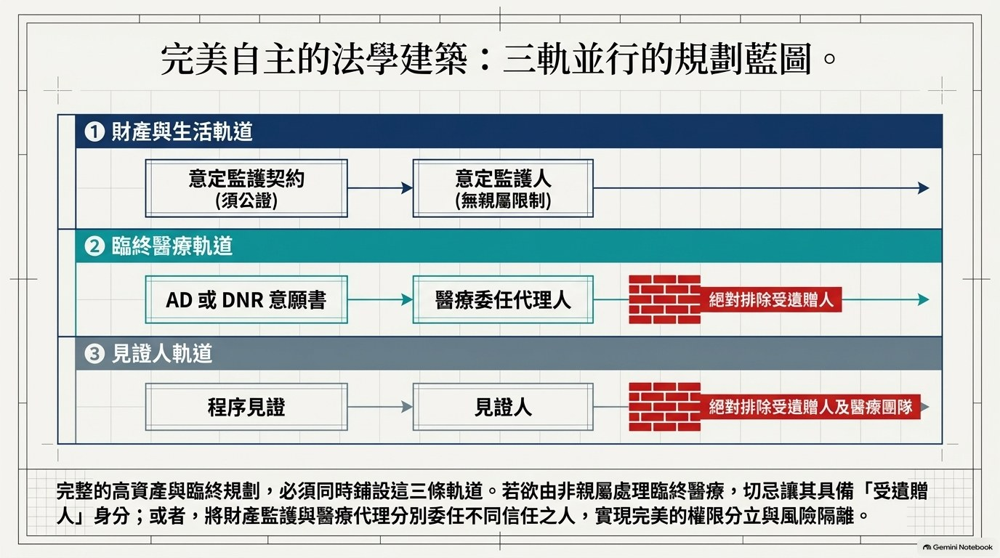